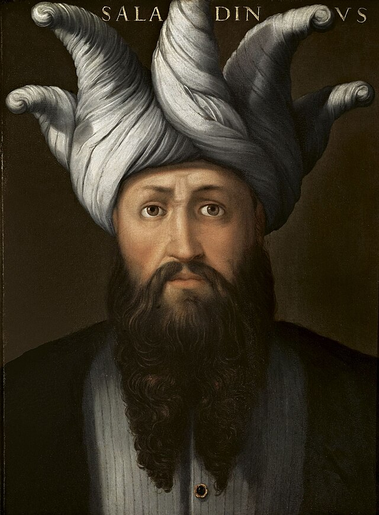

Saladin: The Heroic Leader
Saladin was a famous and honorable leader from the medieval times, born in 1137 in Tikrit, Iraq. He became a great Muslim warrior and is best known for his role in the The Crusades, which were a series of wars between Christians and Muslims. Saladin showed kindness and respect even to his enemies, and he was admired for his chivalry and fairness.
Saladin became the Sultan of Egypt and Syria and successfully united the Muslim forces. One of his most significant achievements was recapturing Jerusalem from the Crusaders in 1187. Despite being a fierce warrior, Saladin was known for his generosity and compassion. He treated prisoners of war well and was admired for his sense of justice.
Saladin's legacy is remembered for his commitment to peace and his ability to bring people together. His story teaches us about the importance of respect, kindness, and fairness, even in challenging times.

Biography: Saladin
Saladin, whose real name was Salahuddin al-Ayyubi, was a brave and kind leader who lived a long time ago, in the 12th century. Born in 1137 in Tikrit, Iraq, Saladin grew up to become one of the greatest heroes in the history of the Middle East.
Saladin was a sultan, which is a fancy word for a king or ruler. He became famous for his courage, wisdom, and fairness. One of the things that made him special was his sense of justice. He believed in treating everyone fairly, no matter where they came from or what they believed in.
One of Saladin's most famous adventures was during the Crusades. The Crusades were a series of wars fought between different groups of people in the Middle East. Saladin was the leader of the Muslims, and he showed incredible bravery and kindness during these battles. Even when he won, Saladin treated the people he conquered with respect and kindness.
One story that shows how amazing Saladin was happened in 1187. He recaptured Jerusalem, an important city, and instead of being mean to the people he defeated, he showed them kindness. He even let the people from different religions live together peacefully.
Saladin wasn't just a great warrior; he was also a smart and caring leader. He built schools and hospitals to help his people, and he made sure everyone had what they needed to live happily.
Saladin's legacy lives on as a symbol of bravery, fairness, and kindness. He taught us that even in tough times, treating others with respect and understanding is the true mark of a hero.
Fun Facts
Saladin was a brave and famous leader from the past who lived during the time of the Crusades. He was born in 1137 in Tikrit, which is now a part of Iraq. Saladin became known for his skill in leading armies and his kindness towards his enemies.
Chivalrous Leader: Saladin was admired for his chivalry, which means he treated his enemies with respect and honor. He showed kindness to his captives and even sent gifts to his enemies.
Great Horse Rider: Saladin was an excellent horse rider. He had strong horsemanship skills, which helped him lead his troops effectively on the battlefield.
Battle of Hattin: One of Saladin's most famous victories was the Battle of Hattin in 1187. He led his forces to victory against the Crusader armies, which had a big impact on the Crusades.
Timeline
1137 Saladin is born in Tikrit, Iraq.
1169 Saladin becomes the ruler of Egypt.
1187 Saladin wins the Battle of Hattin and captures Jerusalem from the Crusaders.
1193 Saladin passes away in Damascus, Syria.
Saladin's Impact on the World
Saladin's legacy continues to be remembered for his bravery, chivalry, and his efforts during the time of the Crusades. He showed that leaders can be strong on the battlefield while also showing kindness and respect to others, even in difficult times.
Sources and Recommended Books for Elementary Students
"Saladin: Noble Prince of Islam" by Diane Stanley and Peter Vennema
This book provides an introduction to Saladin's life and achievements in a way that is accessible for elementary students. The authors use engaging storytelling and illustrations to make the historical context more digestible.
"Saladin: The Muslim Warrior Who Defended His People" by Flora Geyer
This book is part of the "Heroes of Islam" series and focuses on Saladin's life and his role as a Muslim leader. It's written in a way that is suitable for younger readers and includes illustrations to support the narrative.
"Saladin: The Wonder of the World" by Anne Marie Schimmel
While this book may be more suitable for slightly older elementary students, it offers a comprehensive look at Saladin's life and the historical context of the Crusades. The language is accessible, and it provides a good overview of the subject.
"The Story of the World: History for the Classical Child, Volume 2: The Middle Ages" by Susan Wise Bauer
While not solely focused on Saladin, this book covers the Middle Ages and includes information about key historical figures, including Saladin. It provides a broader context for understanding the period.
When introducing elementary students to historical figures like Saladin, it's often helpful to use a combination of books, videos, and interactive activities to keep them engaged and help them better understand the historical context. Additionally, always check the reading level and content to ensure it aligns with the age group you are working with.